⏳ 読み込み中...

現在マイカツ君がコメント送信中
画面を閉じると今日のHPがもらえないので、
このまま閉じずに待っててね。
このまま閉じずに待っててね。


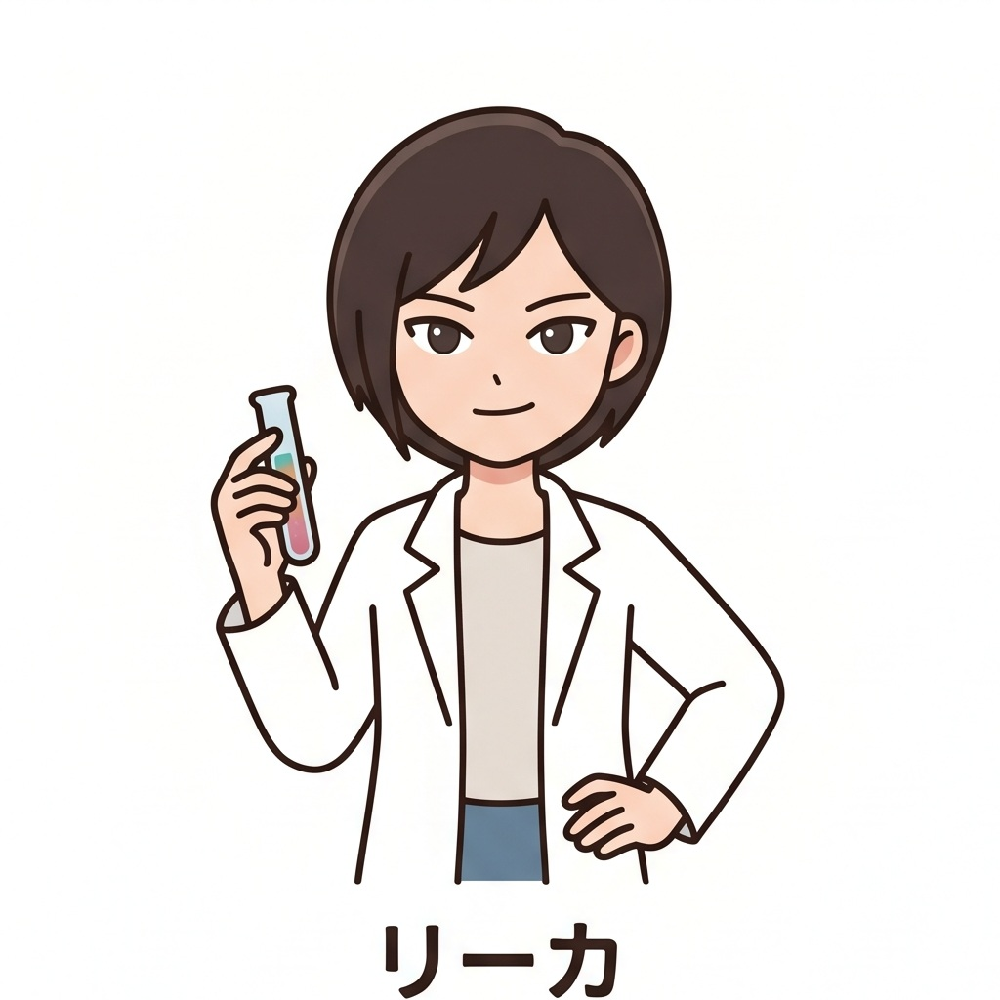
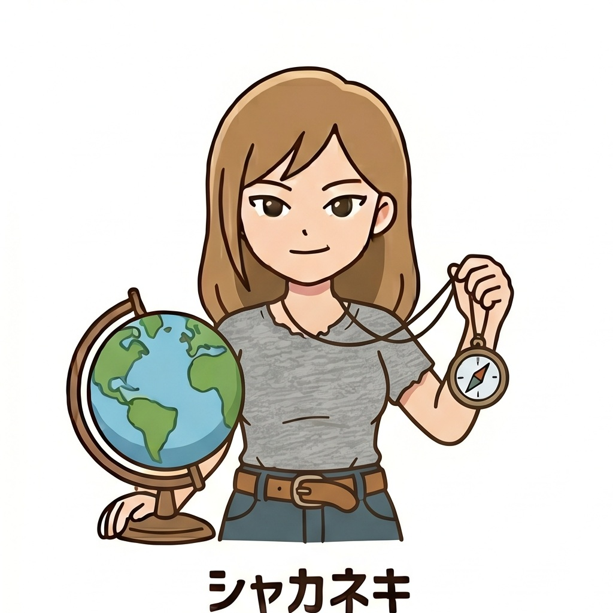
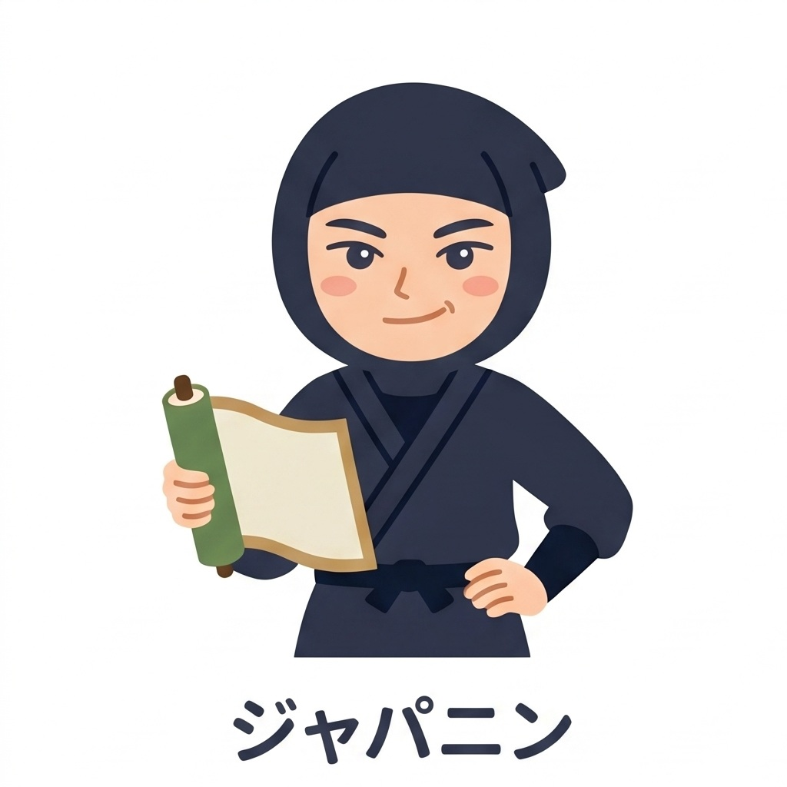


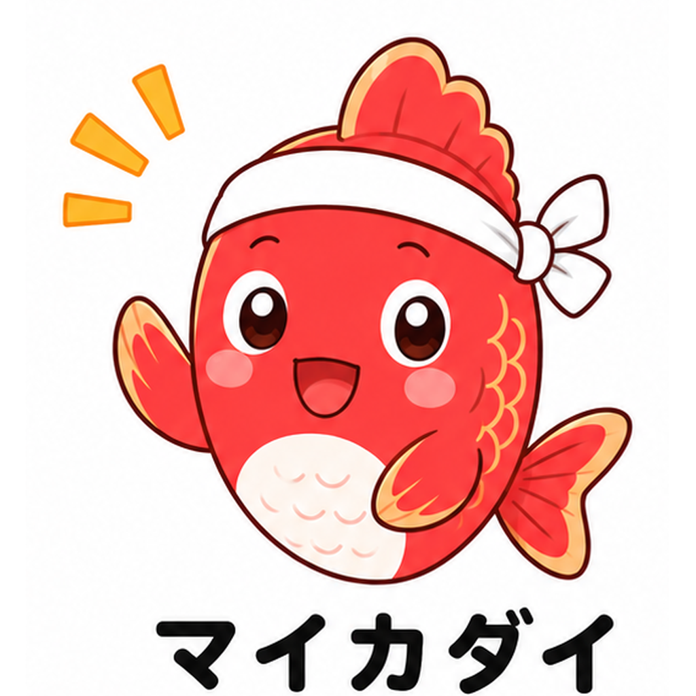
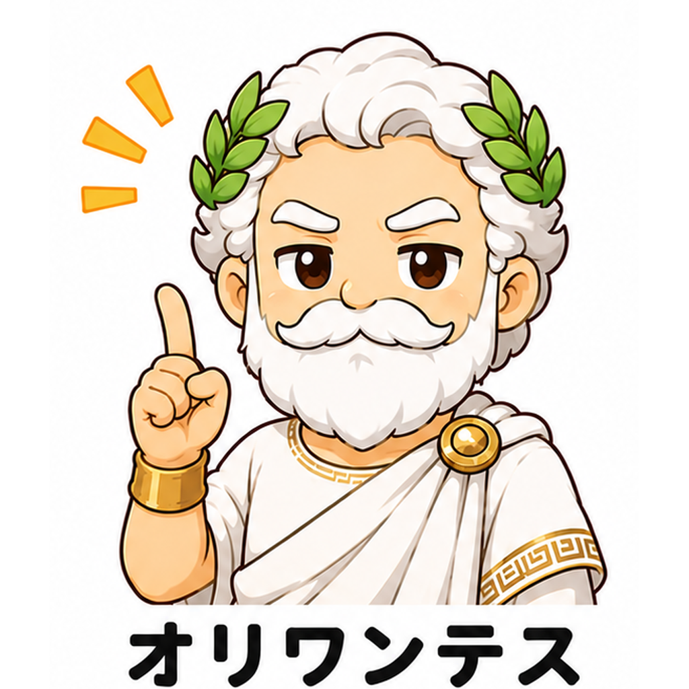
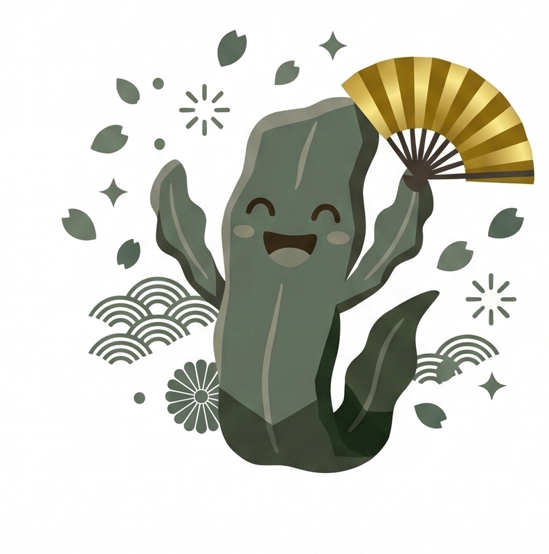
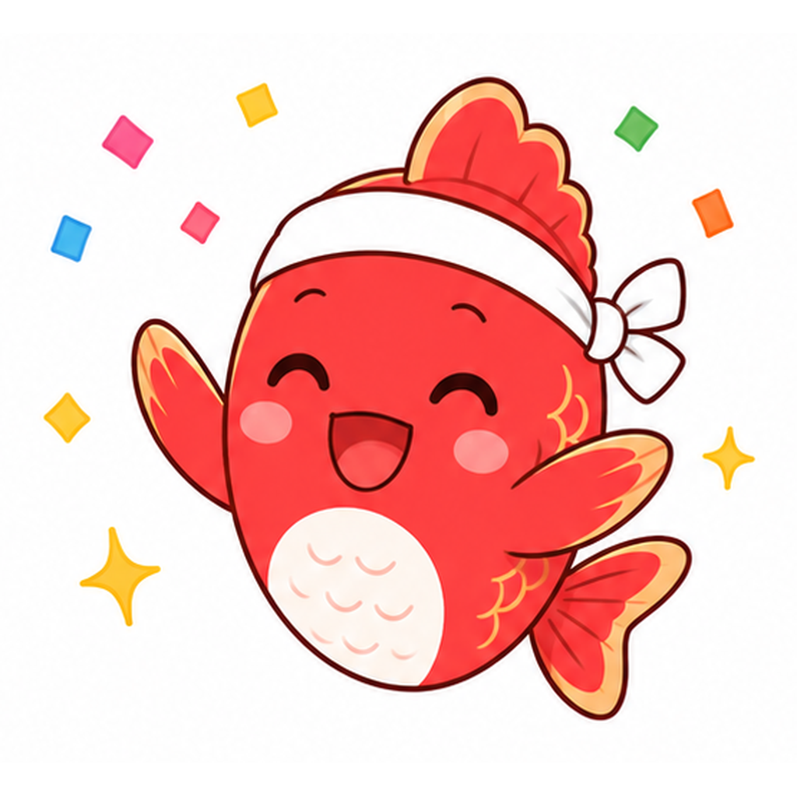
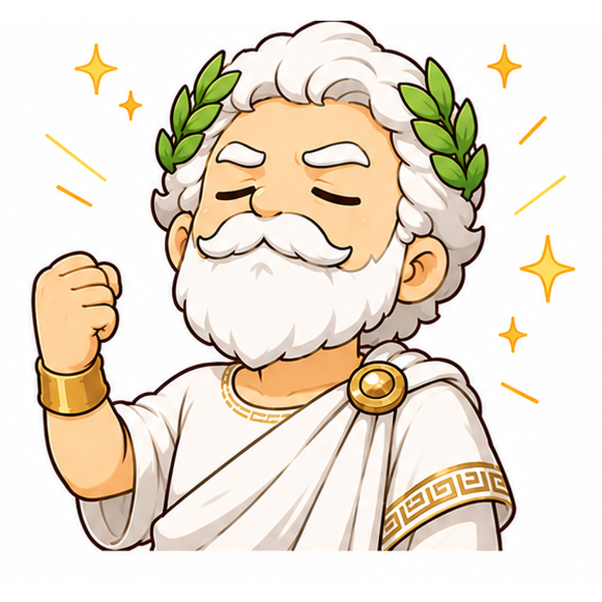
どちらでログインしますか？
ランキング等はニックネームで表示されます
（あとで変更できます）

タップすると既読になります
ログアウト直前に書いた振り返りの一覧（最新が上）
気に入ったアバターをタップしてね


学習するレベルを選んでください
学習する種類を選んでください
👆 こんな感じで書いてね（タップで拡大）
📷 書き終わったらノートを撮影して送ってください

クイズの正解・不正解の音や、HPをもらうときの音を、鳴らす/鳴らさないを切り替えられるよ。
※英語や国語の読み上げの声は、この設定では消えません。

📷 作品を書いたノート等を撮影して送ってください
和文英訳①の採点は、正解と完全に一致している場合のみ⭕となります。英文では、大文字・小文字・ピリオドの有無まで。そして、日本語で答える問題も、一字一句、言葉の順序に至るまで隅々までチェックします。
あえてここまで厳しくする理由は、ここが英語の勉強の最大の「肝」となる部分だから。ここで、「いい加減」や「何となく」を一切排除することが、この先「苦労知らず」で英語を学習していけることにつながります。
何事も最初が肝心。細かいところまで正確にやれる力を、今のうちに身につけよう！


√8 ではなく 2√2）① 1/4 ② 1 ③ 17/30 ④ 1/4 ⑤ 11/14
① 1/4 ② 1 ③ 17/30 ④ 1/4 ⑤ 11/14
x= を付ける：一次・二次方程式は x=○、連立方程式は x=○, y=△。二次方程式で解が2つなら x=3, 5 のようにカンマで並べる（x=3, x=5 のように x を繰り返さない）
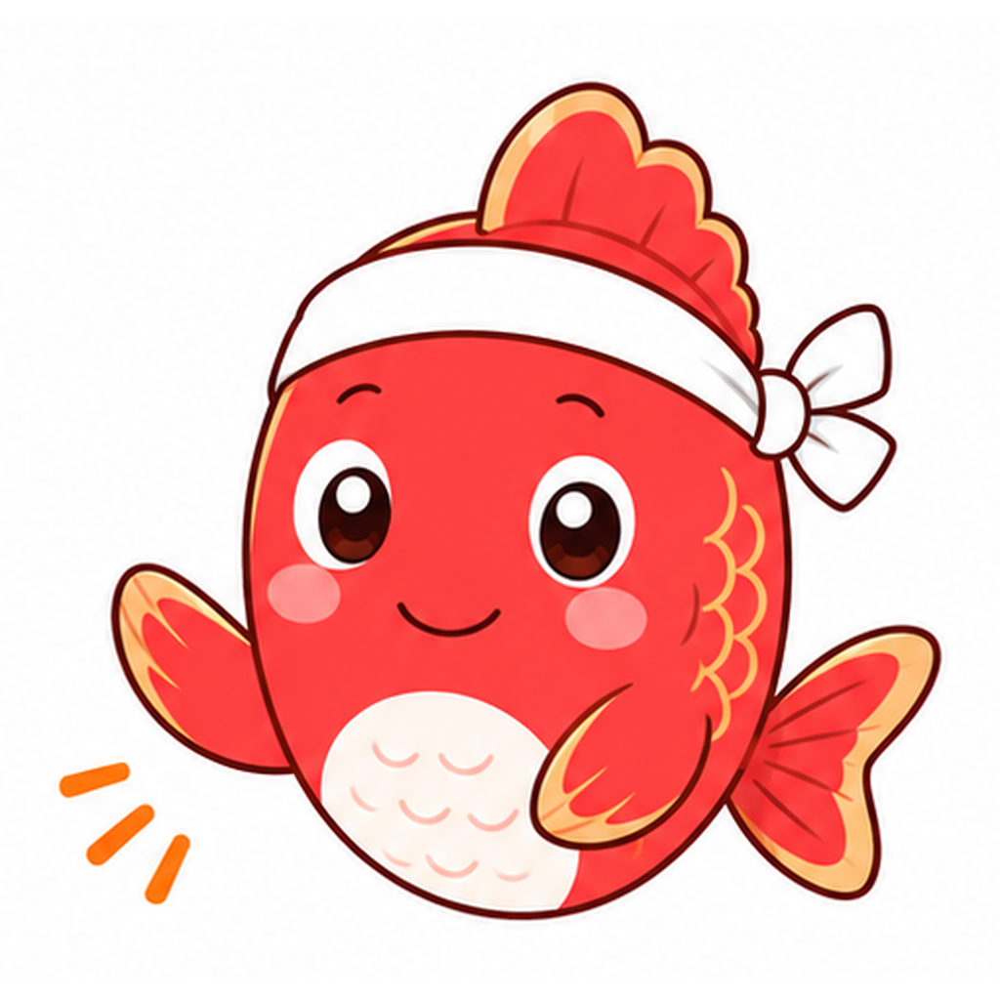
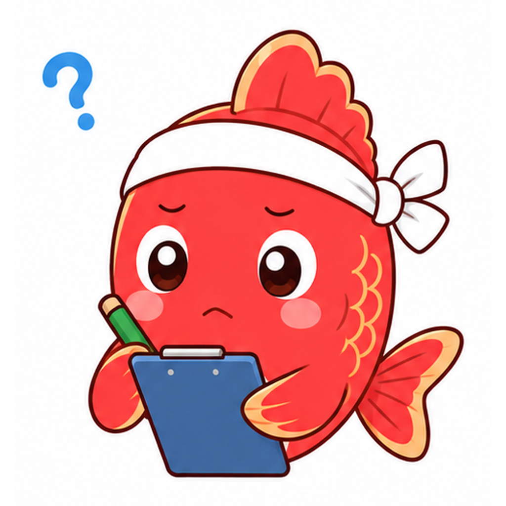


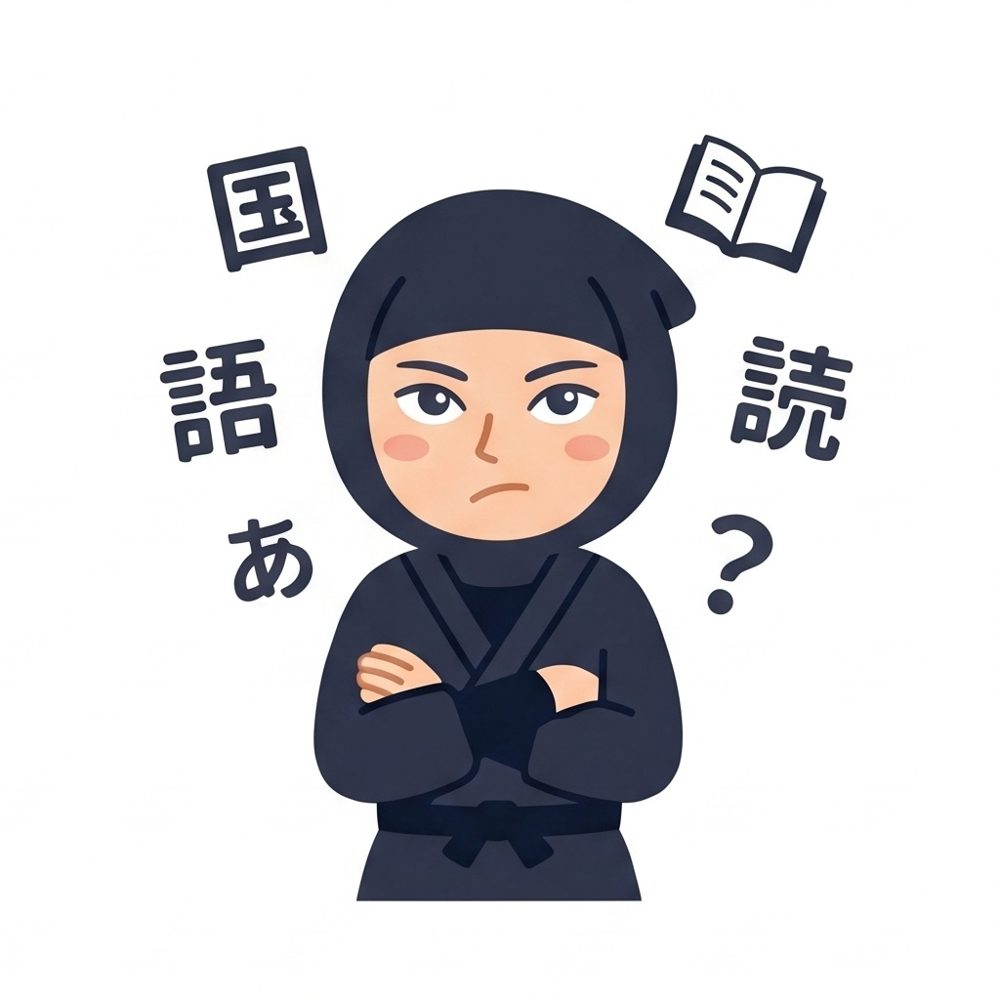


今日の学習はここまで。
このタブを閉じてください。